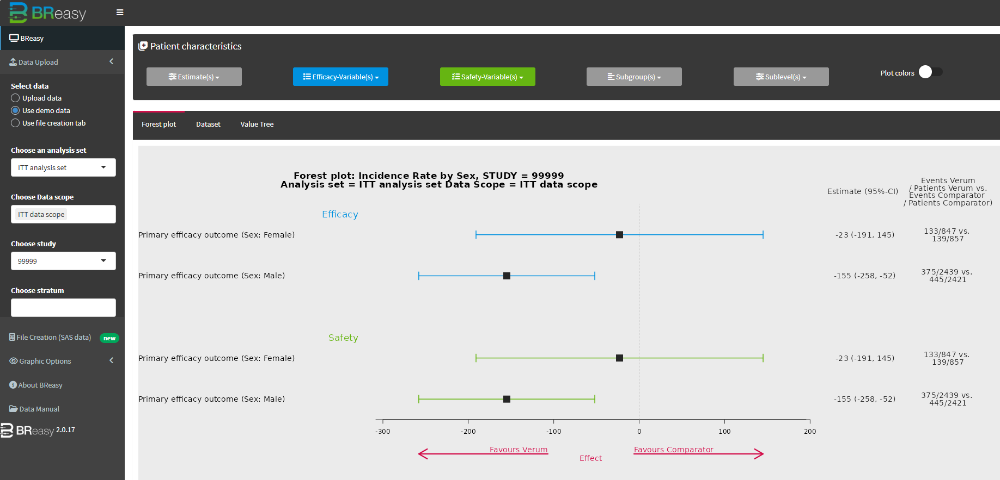

BReasy is a benefit-risk exploration application designed to help study teams evaluate the overall balance between treatment effectiveness and safety in a clear, intuitive way. By combining efficacy and safety outcomes in a unified view, it enables users to quickly understand whether a treatment's clinical value outweighs its associated risks. The app supports detailed assessment of how strongly individual endpoints contribute to the overall benefit-risk picture and highlights the factors that most influence decision-making. Interactive visualizations reveal whether positive treatment effects are observed consistently across multiple measures or driven by only a limited set of outcomes. At the same time, BReasy helps identify safety signals and determine whether risk increases are isolated or part of a broader pattern. Users can explore how the benefit-risk profile evolves across different patient populations, making it easier to uncover subgroup-specific differences and assess robustness of findings. By bringing these insights together in a single environment, BReasy enables faster, more confident interpretation of complex clinical study results and supports evidence-based discussions within the study team.